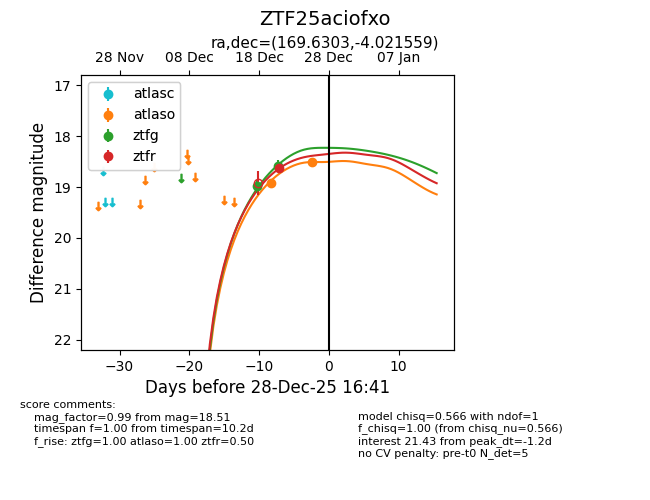
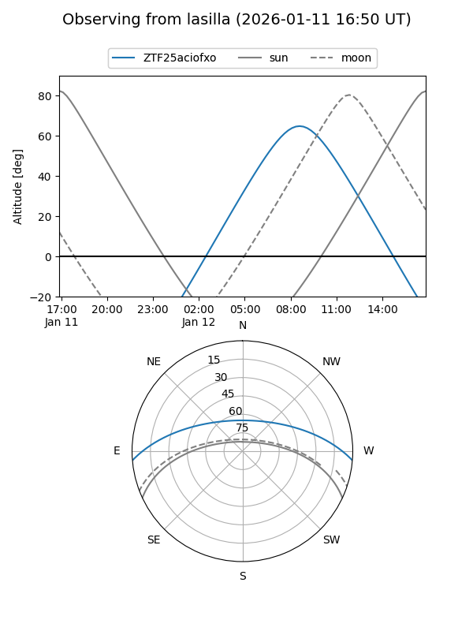
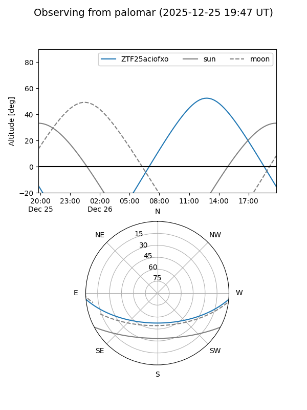
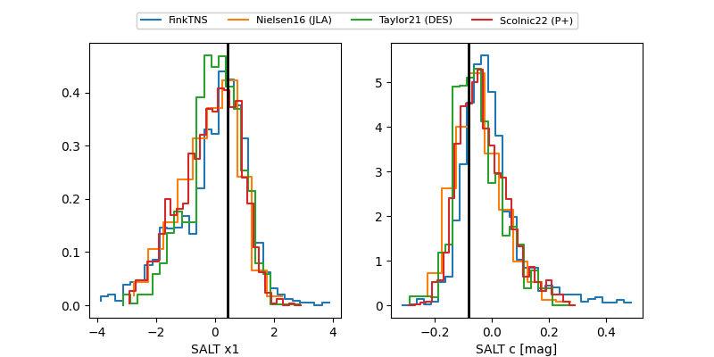

ZTF25aciofxo
Target ZTF25aciofxo at 2026-01-12 09:25
Aliases and brokers:
FINK: link
Lasair: link
ALeRCE: link
alt names
ZTF25aciofxo (ztf,fink_ztf)
Coordinates:
equatorial (ra, dec) = 169.6303,-4.02156
equatorial (HMS+DMS) = 11:18:31.28,-04:01:17.61
galactic (l, b) = (263.6154,+51.61429)
Flags:
Photometry:
last ztfg=19.04, ztfr=18.63
3 ztfg, 1 ztfr detections
Lightcurve

Visibility


Additional plots
